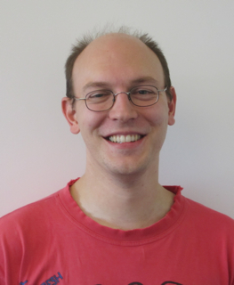

Roland Haas |
Contact Information
|
My current research focuses on the simulation of gravitational waves generated during the inspiral of both comparable mass (black hole—neutron star) and extreme mass-ratio (black hole—white dwarf and supermassive black hole—stellar mass object) binaries as well as possible electromagnetic signatures of these events. In particular the inspiral and merger of neutron star binaries. With the advent of ground based gravitational wave detectors such as LIGO, VIRGO for the first time, directly directing gravitational waves is possible. This will allow us to probe the strong field regime of gravity, verifying the predictions of General Relativity and to "see" into astrophysical systems that are opaque or invisible to electromagnetic radiation.
Extracting these signal from the data stream requires templates to filter the signal out of the noise detector output. My work aims at producing numerical waveforms which are used to produce template data banks for this waveform extraction. If observed the gravitational waves generated by a neutron star—neutron star merger will shed light on the nuclear equation of state (and thus microphysics) of nuclear matter.
I am interested in
A list of my recent publications can be found on SAO/NASA ADS or in my Curriculum Vitae.
My PhD thesis is available here.